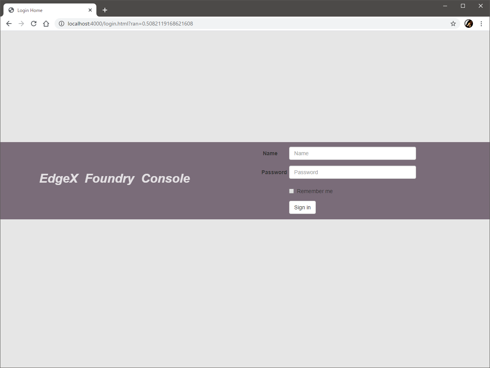
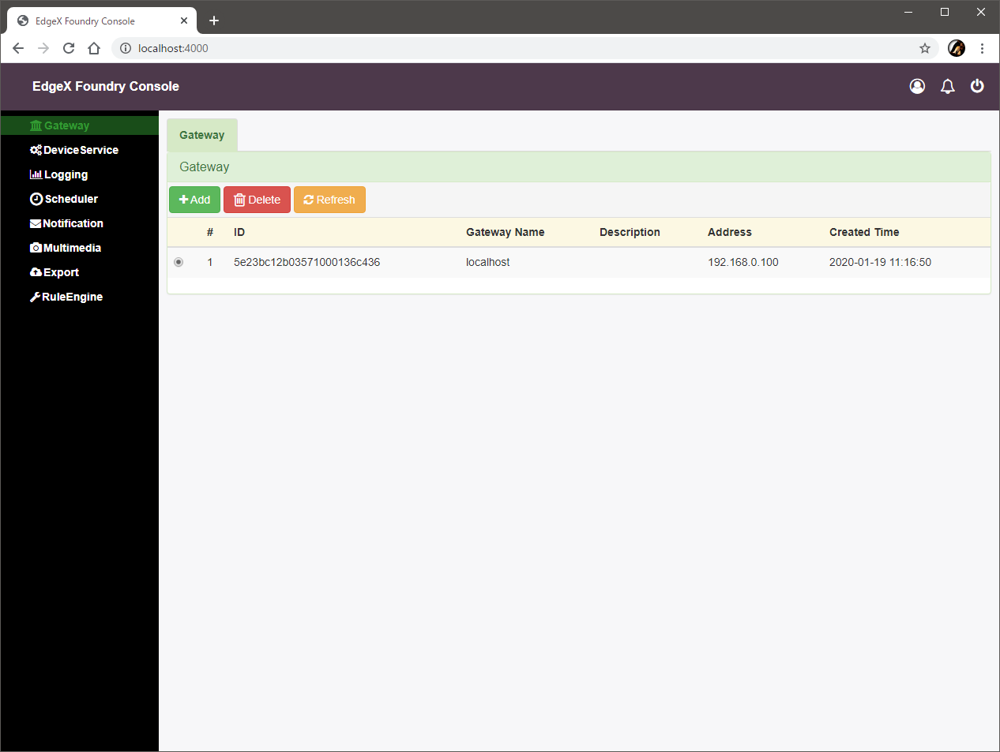

Lab 2 - 導入とデータの確認
このラボでは、EdgeX Foundry を動作させ、テスト用に組み込まれている仮想デバイスを利用して、データが蓄積されていることを確認します。
必要なファイルの用意
GitHub に必要なファイルを配置しています。クローンして利用します。
| git clone https://github.com/kurokobo/edgex-lab-handson.git
|
このラボでは、lab02 ディレクトリの中身を利用します。
EdgeX Foundry の起動
必要な構成は、すべて docker-compose.yml ファイルに記載されています。
まずは、利用されているイメージを Docker Hub からプルします。
1
2
3
4
5
6
7
8
9
10
11
12
13
14
15
16
17
18
19 | $ docker-compose pull
Pulling volume ... done
Pulling consul ... done
Pulling config-seed ... done
Pulling mongo ... done
Pulling logging ... done
Pulling system ... done
Pulling notifications ... done
Pulling metadata ... done
Pulling data ... done
Pulling command ... done
Pulling scheduler ... done
Pulling app-service-rules ... done
Pulling rulesengine ... done
Pulling export-client ... done
Pulling export-distro ... done
Pulling device-virtual ... done
Pulling ui ... done
Pulling portainer ... done
|
プルできたら、デタッチモードで起動させます。
1
2
3
4
5
6
7
8
9
10
11
12
13
14
15
16
17
18
19
20
21 | $ docker-compose up -d
Creating network "lab01_edgex-network" with driver "bridge"
Creating network "lab01_default" with the default driver
Creating edgex-files ... done
Creating lab01_portainer_1 ... done
Creating edgex-core-consul ... done
Creating edgex-mongo ... done
Creating edgex-config-seed ... done
Creating edgex-support-logging ... done
Creating edgex-core-metadata ... done
Creating edgex-sys-mgmt-agent ... done
Creating edgex-support-notifications ... done
Creating edgex-core-data ... done
Creating edgex-support-scheduler ... done
Creating edgex-core-command ... done
Creating edgex-app-service-configurable-rules ... done
Creating edgex-export-client ... done
Creating edgex-ui-go ... done
Creating edgex-device-virtual ... done
Creating edgex-export-distro ... done
Creating edgex-support-rulesengine ... done
|
docker-compose up -d がエラーなく完了したら、docker-compose ps で edgex-config-seed 以外の Status が Up になっていることを確認します。
1
2
3
4
5
6
7
8
9
10
11
12
13
14
15
16
17
18
19
20
21 | $ docker-compose ps
Name Command State Ports
-----------------------------------------------------------------------------------------------------------------------------------------------------------------------------------------------------
edgex-app-service-configurable-rules /app-service-configurable ... Up 48095/tcp, 0.0.0.0:48100->48100/tcp
edgex-config-seed /edgex/cmd/config-seed/con ... Exit 0
edgex-core-command /core-command --registry - ... Up 0.0.0.0:48082->48082/tcp
edgex-core-consul docker-entrypoint.sh agent ... Up 8300/tcp, 8301/tcp, 8301/udp, 8302/tcp, 8302/udp, 0.0.0.0:8400->8400/tcp, 0.0.0.0:8500->8500/tcp, 8600/tcp, 8600/udp
edgex-core-data /core-data --registry --pr ... Up 0.0.0.0:48080->48080/tcp, 0.0.0.0:5563->5563/tcp
edgex-core-metadata /core-metadata --registry ... Up 0.0.0.0:48081->48081/tcp, 48082/tcp
edgex-device-virtual /device-virtual --profile= ... Up 0.0.0.0:49990->49990/tcp
edgex-export-client /export-client --registry ... Up 0.0.0.0:48071->48071/tcp
edgex-export-distro /export-distro --registry ... Up 0.0.0.0:48070->48070/tcp, 0.0.0.0:5566->5566/tcp
edgex-files /bin/sh -c /usr/bin/tail - ... Up
edgex-mongo /edgex-mongo/bin/edgex-mon ... Up 0.0.0.0:27017->27017/tcp
edgex-support-logging /support-logging --registr ... Up 0.0.0.0:48061->48061/tcp
edgex-support-notifications /support-notifications --r ... Up 0.0.0.0:48060->48060/tcp
edgex-support-rulesengine /bin/sh -c java -jar -Djav ... Up 0.0.0.0:48075->48075/tcp
edgex-support-scheduler /support-scheduler --regis ... Up 0.0.0.0:48085->48085/tcp
edgex-sys-mgmt-agent /sys-mgmt-agent --registry ... Up 0.0.0.0:48090->48090/tcp
edgex-ui-go ./edgex-ui-server Up 0.0.0.0:4000->4000/tcp
lab01_portainer_1 /portainer -H unix:///var/ ... Up 0.0.0.0:9000->9000/tcp
|
構成の確認
この段階で、最低限必要な一通りのモノはすでに稼働しています。

EdgeX Foundry で制御したいデバイスは、この時点では物理的には存在していませんが、テスト用の仮想デバイスが初期状態でいくつか用意されています。これが図中に赤枠で示したもので、
- デバイス
- ランダムな値を生成し続けるだけのデバイス
- ひとつのデバイスが複数のリソースを持つ
- ここでいうリソースは、デバイスとやり取りできる情報の種類のこと
- 例えば、今回のデバイスのひとつ Random-Float-Device であれば、Float32 と Float64 という二種類のリソースを持っていて、別々に制御できる
- これは具体的には、例えば『空調センサ』という一つのデバイスが『温度』と『湿度』の二つの情報を持っているような状態
- 外部から、指定したリソースの現在のランダム値を読み取れる
- 外部から、指定したリソースの数値の生成ロジックを設定できる
- デバイスサービス
- 前述のデバイス群（4 つ）を管理するインタフェイス
- デバイスごとに一定の間隔で所定のリソースの現在の値を取得し、コアサービス層に蓄積する
- コアサービス層からあるリソースへの GET コマンドを受け取ると、デバイスからそのリソースの現在の値を取得して返す
- コアサービス層からあるリソースへの POST コマンドを受け取ると、デバイスのそのリソースの数値の生成ロジックを変更する
- コアサービス
- デバイスサービスから送られた値を蓄積する
- （GUI や API を通じて依頼された）デバイスに対する GET や POST のコマンド実行をデバイスサービスに指示する
のように構成されています。
すなわち、最終的に行いたい、デバイスからのセンシングとその値の蓄積、デバイスに対するアクチュエーションが、物理デバイスではないものの、仮想的なデバイスとしてすでに動いていることになります。
実世界でいえば、デバイスは何らかの装置（スイッチとかセンサとかカメラとかいろいろ）であり、外部からはそのデバイスごとにさまざまな手順で情報を取得したり制御したりする必要があります。
デバイスサービスは、そうしたデバイスごとのプロトコルの差異を抽象化したインタフェイスとして振舞い、デバイス種別ごとに単一のコントロールポイントを提供するわけです。
操作手段
操作は GUI、CLI、REST API の三種類で行えます。
といっても、日常的に何らかの操作をすべきものではなく、最初の構築時点でデバイスの登録だったりエクスポートの設定だったりルールエンジンの構成だったりをしてしまったあとは、あとは粛々と運用し続けることになるでしょう。
現段階では、GUI がリッチではありませんが、そういう利用実態を考えればそういうものかもしれません。原則、すべての操作が REST API を介して行えるようになっているので、基本的には Postman などのツールを使って API を叩くものだと思っておいたほうがよさそうです。
GUI での操作
edgex-ui-go が標準の Web GUI です。ブラウザで 4000 番ポートにアクセスして、デフォルトのユーザ admin（パスワードも admin）でログインできます。
Docker ホストの IP アドレスを確認して、http://<IP アドレス>:4000/ でアクセスできます。

この GUI を通じてもろもろを操作したい場合は、まずはこの GUI で操作する対象を登録する必要があります。[Gateway] の [Add] ボタンで、Docker ホストの IP アドレスを登録します。

登録したゲートウェイを選択した状態で [Device Service] に遷移すると、先述の device-virtual が登録されている様子が見えるはずです。
さらにデバイスサービス device-virtual の [Devices] アイコンを展開すると、このデバイスサービス経由で管理している、先の図で赤枠で示したデバイス群が確認できます。
さらにデバイスごとの [Commands] を展開すると、デバイスからの情報の取得や、制御命令の実行ができるようになっています。
別の GUI
別の GUI が欲しい場合、edgex-ui-closure という、EdgeX Foundry の商用版である Edge Xpert の GUI のベースになったものも利用できます。こちらのブログエントリ でも紹介しています。
CLI での操作
CLI として、現時点ではオフィシャルなリリースではありませんが、edgex-cli が存在しています。Go 言語で書かれていて、利用するには自分で make する必要があります。
本ラボでは省略しますが、リポジトリ に導入手順があり、また こちらのブログエントリ ではコンテナ環境での使用方法を紹介しています。
API での操作
GUI も CLI も結局は REST API にリクエストを投げたレスポンスを整形して表示しているだけなので、これがいちばん生々しく触れる手段です。これでできない操作は基本的にはないはずなので、できなかったらあきらめましょう……。
ただの REST API なので、細かくは 公式のリファレンス を参照してもらえればわかると思います。
例えば、デバイスサービスやデバイスの一覧は以下のエンドポイントに GET を投げると JSON で返ってきます。
- デバイスサービスの一覧
http://<IP アドレス>:48081/api/v1/deviceservice
- デバイスサービスの詳細
http://<IP アドレス>:48081/api/v1/deviceservice/name/<デバイスサービス名>
- デバイスサービス名は一覧で取得できた name の値
http://<IP アドレス>:48081/api/v1/deviceservice/<デバイスサービス ID>
- デバイスサービス ID は一覧で取得できた id の値
- デバイスの一覧
http://<IP アドレス>:48081/api/v1/device
- デバイスの詳細
http://<IP アドレス>:48081/api/v1/device/name/<デバイス名>
http://<IP アドレス>:48081/api/v1/device/<デバイス ID>
蓄積データの確認
先述の通り、末端の仮想デバイスで生成されたランダムな値は、デバイスサービス virtual-device を通じてコアサービス層に蓄積されています。実際に動いていることを確認するため、蓄積された値を覗きに行きます。
蓄積データの構造
デバイスサービスは、一つ以上の Reading を含む Event オブジェクトを POST することで、コアサービスにデータを送ります。
Reading
- 単一のデバイスの単一のリソースから取得した値の情報
Event
- あるデバイスサービスが一回の処理で単一のデバイスから取得した一つ以上の
Reading の集合
- 例えば『温度と湿度はセットで
GET する』ような構成を組んだ場合は、ひとつの Event に二つの Reading が含まれる
API での蓄積データの確認
Event を取得するエンドポイントに、URL にデバイス名や取得するイベント数を指定して GET すると、Reading を含む情報が得られます。今回の仮想デバイスでは、ひとつの Event にはひとつの Reading が含まれます。
1
2
3
4
5
6
7
8
9
10
11
12
13
14
15
16
17
18
19
20
21
22
23
24
25
26
27
28
29
30
31
32
33
34
35
36
37
38
39 | $ curl -s http://localhost:48080/api/v1/event/device/Random-Float-Device/2 | jq
[
{
"id": "4949fc7f-069b-49b1-bc52-f905c5109692",
"device": "Random-Float-Device",
"created": 1579419158139,
"modified": 1579419158139,
"origin": 1579419158137800200,
"readings": [
{
"id": "6dcac272-28ad-4755-972f-ad58b02aa000",
"created": 1579419158138,
"origin": 1579419158124917000,
"modified": 1579419158138,
"device": "Random-Float-Device",
"name": "Float32",
"value": "fvU+Nw=="
}
]
},
{
"id": "f4f62305-ce8c-4f19-960b-ba2977ab0b2b",
"device": "Random-Float-Device",
"created": 1579419157643,
"modified": 1579419157643,
"origin": 1579419157642273800,
"readings": [
{
"id": "227aa868-6dbe-4e53-af27-c773075eac85",
"created": 1579419157642,
"origin": 1579419157630999000,
"modified": 1579419157642,
"device": "Random-Float-Device",
"name": "Float64",
"value": "1.258607e+308"
}
]
}
]
|
特定のリソースの情報に絞りたい場合は、Reading のエンドポイントにリソース名を指定して GET します
1
2
3
4
5
6
7
8
9
10
11
12
13
14
15
16
17
18
19
20
21 | $ curl -s http://localhost:48080/api/v1/reading/name/Float64/2 | jq
[
{
"id": "e1e950c0-7533-4664-a606-91c97e8dbb85",
"created": 1579419397777,
"origin": 1579419397752820200,
"modified": 1579419397777,
"device": "Random-Float-Device",
"name": "Float64",
"value": "8.073392e+305"
},
{
"id": "2b30bdf3-cb3e-4bac-bd20-87653e9259f2",
"created": 1579419367748,
"origin": 1579419367735956200,
"modified": 1579419367748,
"device": "Random-Float-Device",
"name": "Float64",
"value": "-3.105079e+307"
}
]
|
エンコードされた数値のデコード
データを確認した際、Float32 の値が /oyN8A== のように文字列で表示されていました。これは内部的にはこの型の数値（を表すバイト列）を Base64 でエンコードして保持しているからです。
数値を保持する際のエンコード有無は、デバイスを追加するときに作成するプロファイルの中で指定できますが、今回は事前構成済みのデバイスを利用しているため、デフォルトの設定に従ってこのようになっています。
エンコードされた数値はデコードすると数値に戻せます。もっといいやり方がありそうな気はしますが、よくわからないので 適当なデコーダを作りました。Go が動く環境（CLI での操作で使ったコンテナ内など）で利用できます。
| $ git clone https://github.com/kurokobo/edgex-decode-base64.git
$ cd edgex-decode-base64/
$ go run main.go /eOKAw==
8.163255e-37
|
生のデータベースの探索
ところで、API で生データが取得できると書きましたが、これらのデータは MongoDB に保管されています。MongoDB に直接アクセスすると、実際のデータを確認できます。
外部から MongoDB Compass などでアクセスする場合は、ポート 27017 にユーザ名 core、パスワード password で認証できますが、ここではコンテナのシェルに入って確認します。
edgex-mongo が、MongoDB の実体のコンテナです。これのシェルを取って、MongoDB のプロンプトに入ります。複数のデータベースが存在していることがわかります。
1
2
3
4
5
6
7
8
9
10
11
12
13
14
15
16
17 | $ docker exec -it edgex-mongo bash
# mongo
MongoDB shell version v4.2.0
...
> show databases
admin 0.000GB
application-service 0.000GB
config 0.000GB
coredata 0.011GB
exportclient 0.000GB
local 0.000GB
logging 0.006GB
metadata 0.000GB
notifications 0.000GB
scheduler 0.000GB
|
Event と Reading の値は、coredata 内のコレクションに保持されています。
| > use coredata
switched to db coredata
> show collections
event
reading
valueDescriptor
|
あとは MongoDB のお作法に従って find() などを叩くのみです。遊んだら exit で抜けます。
| > db.reading.find().limit(5)
{ "_id" : ObjectId("5e2471bb0e360800014be635"), "created" : NumberLong("1579446715833"), "modified" : NumberLong("1579446715833"), "origin" : NumberLong("1579446715806322700"), "uuid" : "e0af3c99-be57-4cec-a59a-2af2da976d41", "pushed" : NumberLong(0), "device" : "Random-Boolean-Device", "name" : "Bool", "value" : "true" }
{ "_id" : ObjectId("5e2471bb0e360800014be637"), "created" : NumberLong("1579446715857"), "modified" : NumberLong("1579446715857"), "origin" : NumberLong("1579446715831613700"), "uuid" : "c336b11e-8e91-4007-bd3f-1ee63d80e45b", "pushed" : NumberLong(0), "device" : "Random-Boolean-Device", "name" : "Bool", "value" : "false" }
{ "_id" : ObjectId("5e2471c00e360800014be639"), "created" : NumberLong("1579446720829"), "modified" : NumberLong("1579446720829"), "origin" : NumberLong("1579446720815333700"), "uuid" : "2ae4befc-1fee-48ab-b621-b4d56747a446", "pushed" : NumberLong(0), "device" : "Random-Integer-Device", "name" : "Int16", "value" : "9761" }
{ "_id" : ObjectId("5e2471c00e360800014be63b"), "created" : NumberLong("1579446720843"), "modified" : NumberLong("1579446720843"), "origin" : NumberLong("1579446720830168500"), "uuid" : "317ea1f1-0c36-4e6d-a489-b48711ff5dd6", "pushed" : NumberLong(0), "device" : "Random-Integer-Device", "name" : "Int64", "value" : "-9069744988884413669" }
{ "_id" : ObjectId("5e2471c00e360800014be63d"), "created" : NumberLong("1579446720857"), "modified" : NumberLong("1579446720857"), "origin" : NumberLong("1579446720841898700"), "uuid" : "5be3634e-b171-4849-9bac-f13de720c11e", "pushed" : NumberLong(0), "device" : "Random-Integer-Device", "name" : "Int32", "value" : "-913901160" }
> exit
# exit
|
環境の停止
後続のラボでは、現在利用しているものとは別の docker-compose.yml ファイルを利用しますので、クリーンアップします。
次のコマンドで、作成したコンテナと、自動で作成された永続ボリューム領域を削除します。
| $ docker-compose down --volumes
Stopping edgex-device-virtual ... done
...
Removing image portainer/portainer
|
プルしたイメージは後続のラボで利用しますので、--rmi all は指定しません。
まとめ
EdgeX Foundry を起動させて、仮想のデバイスを利用したデータの取得や蓄積っぷりが、GUI や CLI、API などで確認できました。